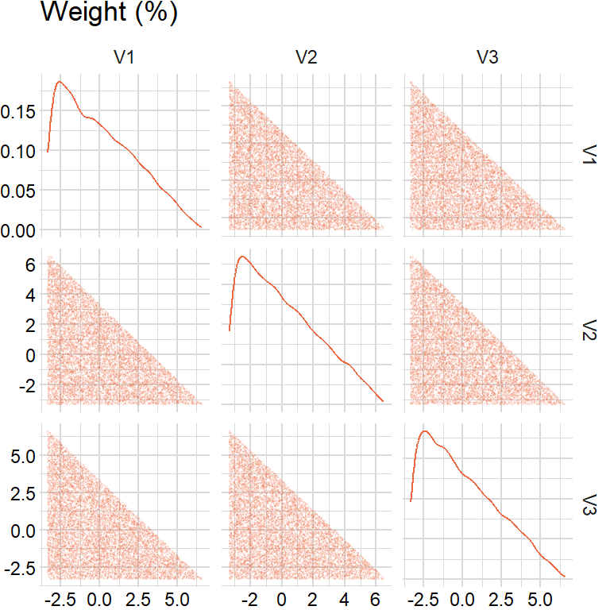
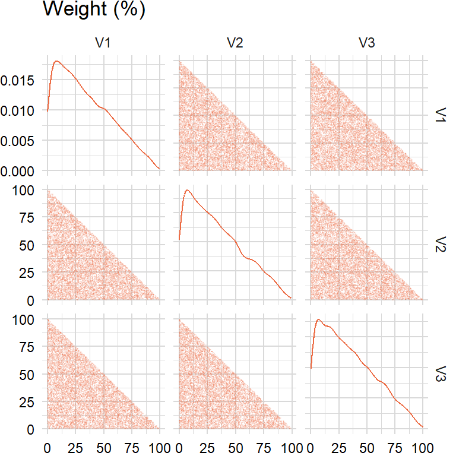
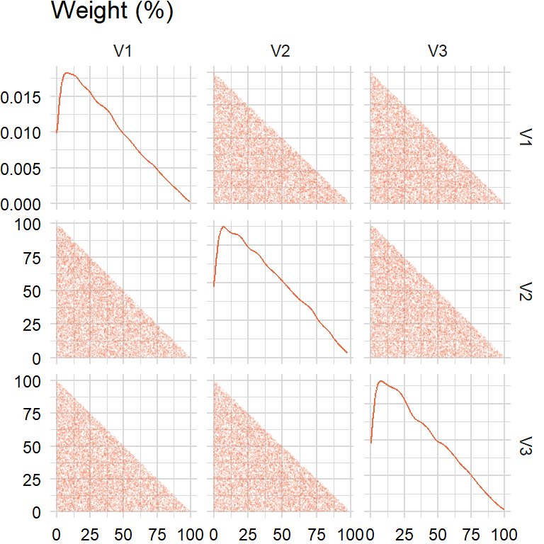
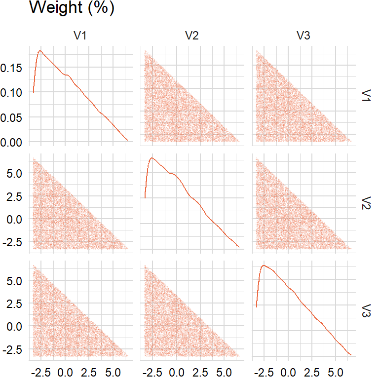

library(quantmod)
library(roll)
library(data.table)factors_r <- c("SP500", "DTWEXAFEGS") # "SP500" does not contain dividends; note: "DTWEXM" discontinued as of Jan 2020
factors_d <- c("DGS10", "BAMLH0A0HYM2")
factors <- c(factors_r, factors_d)
width <- 252
scale <- list("periods" = 252, "overlap" = 5)getSymbols(factors, src = "FRED")
levels_xts <- do.call(merge, c(lapply(factors, function(i) get(i)), all = TRUE))returns_xts <- do.call(merge, lapply(factors, function(i) {
if (i %in% factors_r) {
diff(log((levels_xts[ , i])))
} else if (i %in% factors_d) {
-diff(levels_xts[ , i]) / 100
}
}))
overlap_xts <- roll_mean(returns_xts, scale[["overlap"]], min_obs = 1, na_restore = TRUE)library(CVXR)tickers <- "BAICX" # fund inception date is "2011-11-28"
invisible(getSymbols(tickers, src = "tiingo", api.key = Sys.getenv("TIINGO_API_KEY"), adjust = TRUE))
prices_xts <- do.call(merge, c(lapply(tickers, function(i) Cl(get(i))), all = TRUE))
colnames(prices_xts) <- tickers
index(prices_xts) <- as.Date(index(prices_xts))returns_xts <- merge(returns_xts, diff(log(prices_xts)))
overlap_xts <- merge(overlap_xts, roll_mean(returns_xts[ , tickers], scale[["overlap"]], min_obs = 1))# weights <- 0.9 ^ ((width - 1):0)
weights <- rep(1, width)# overlap_df <- na.omit(overlap_xts)
overlap_x_df <- na.omit(overlap_xts)[ , factors]
overlap_y_df <- na.omit(overlap_xts)[ , tickers]
overlap_x_xts <- tail(overlap_x_df, width)
overlap_y_xts <- tail(overlap_y_df, width)Random weights
Need to generate uniformly distributed weights \(\mathbf{w}=(w_{1},w_{2},\ldots,w_{N})\) such that \(\sum_{j=1}^{N}w_{i}=1\) and \(w_{i}\geq0\):
Approach 1: tempting to use \(w_{i}=\frac{u_{i}}{\sum_{j=1}^{N}u_{i}}\) where \(u_{i}\sim U(0,1)\) but the distribution of \(\mathbf{w}\) is not uniform
Approach 2: instead, generate \(\text{Exp}(1)\) and then normalize
Can also scale random weights by \(M\), e.g. if sum of weights must be 10% then multiply weights by 10%.
rand_weights1 <- function(n_sim, n_assets, lmbda) {
rand_exp <- matrix(runif(n_sim * n_assets), nrow = n_sim, ncol = n_assets)
result <- sweep(rand_exp, 1, rowSums(rand_exp), "/")
return(result)
}# Methodology: uniform sampling from the simplex (http://mathoverflow.net/a/76258)
# z ~ U(0, 1) then -ln(z) is an exponential(1) distribution
# This is also known as generating a random vector from the symmetric Dirichlet distribution
rand_weights2 <- function(n_sim, n_assets, lmbda) {
rand_exp <- matrix(-log(1 - runif(n_sim * n_assets)) / lmbda, nrow = n_sim, ncol = n_assets)
result <- sweep(rand_exp, 1, rowSums(rand_exp), "/")
return(result)
}# 1. Generate n exponential(1) random variables x_1, x_2, ..., x_n
# 2. Let y_i = x_i / (sum_{i = 1}^{n} x_i)
rand_weights3 <- function(n_sim, n_assets, lmbda) {
rand_exp <- matrix(rexp(n_sim * n_assets), nrow = n_sim, ncol = n_assets)
result <- sweep(rand_exp, 1, rowSums(rand_exp), "/")
return(result)
}lmbda <- 1
n_assets <- 3
n_sim <- 10000approach1 <- rand_weights1(n_sim, n_assets, lmbda)
approach2 <- rand_weights2(n_sim, n_assets, lmbda)
approach3 <- rand_weights2(n_sim, n_assets, lmbda)


Random turnover
How to generate random weights between lower bound \(a\) and upper bound \(b\) that sum to zero?
Approach 1: tempting to multiply random weights by \(M\) and then subtract by \(\frac{M}{N}\) but the distribution is not between \(a\) and \(b\)
Approach 2: instead, use an iterative approach for random turnover:
- Generate \(N-1\) uniformly distributed weights between \(a\) and \(b\)
- For \(u_{N}\) compute sum of values and subtract from \(M\)
- If \(u_{N}\) is between \(a\) and \(b\), then keep; otherwise, discard
Then add random turnover to previous period’s random weights.
rand_iterative <- function(n_assets, lower, upper, target) {
plug <- FALSE
while (!plug) {
result <- as.matrix(runif(n_assets - 1, min = lower, max = upper))
temp <- target - sum(result)
if ((temp <= upper) && (temp >= lower)) {
plug <- TRUE
}
}
result <- append(result, temp)
return(result)
}rand_turnover1 <- function(n_sim, n_assets, lower, upper, target) {
rng <- upper - lower
result <- rand_weights3(n_sim, n_assets, lmbda) * rng
result <- result - rng / n_assets
return(result)
}rand_turnover2 <- function(n_sim, n_assets, lower, upper, target) {
result <- matrix(rand_iterative(n_assets, lower, upper, target), nrow = 1, ncol = n_assets)
while (nrow(result) < n_sim) {
temp <- matrix(rand_iterative(n_assets, lower, upper, target), nrow = 1, ncol = n_assets)
result <- rbind(result, temp)
}
return(result)
}lower <- -0.05
upper <- 0.05
target <- 0approach1 <- rand_turnover1(n_sim, n_assets, lower, upper, target)
approach2 <- rand_turnover2(n_sim, n_assets, lower, upper, target)
Mean-variance
geometric_mean <- function(x, scale) {
result <- prod(1 + x) ^ (scale / length(x)) - 1
return(result)
}returns_x_xts <- na.omit(returns_xts)[ , factors] # extended history # REMOVE LATER
mu <- apply(returns_x_xts, 2, geometric_mean, scale = scale[["periods"]])
sigma <- cov(overlap_x_xts) * scale[["periods"]] * scale[["overlap"]]Maximize mean
\[ \begin{aligned} \begin{array}{rrcl} \displaystyle\max_{x}&\mu^{T}\mathbf{w}\\ \textrm{s.t.}&\mathbf{w}^T\Sigma\mathbf{w}&\leq&\sigma^{2}\\ &e^T\mathbf{w}&=&1 \end{array} \end{aligned} \]
target <- 0.06max_pnl_optim <- function(mu, sigma, target) {
params <- Variable(length(mu))
cons <- list(params >= 0, sum(params) == 1,
quad_form(params, sigma) <= target ^ 2)
obj <- Maximize(t(params) %*% mu)
result <- solve(Problem(obj, cons))$getValue(params)
return(result)
}params1 <- max_pnl_optim(mu, sigma, target)
params1 [,1]
[1,] 4.587378e-01
[2,] 5.412619e-01
[3,] 1.406586e-07
[4,] 8.392967e-08mu %*% params1 [,1]
[1,] 0.04181331sqrt(t(params1) %*% sigma %*% params1) [,1]
[1,] 0.06Minimize variance
\[ \begin{aligned} \begin{array}{rrcl} \displaystyle\min_{x}&\mathbf{w}^T\Sigma\mathbf{w}\\ \textrm{s.t.}&\mu^{T}\mathbf{w}&\geq&M\\ &e^T\mathbf{w}&=&1 \end{array} \end{aligned} \]
target <- 0.03min_risk_optim <- function(mu, sigma, target) {
params <- Variable(length(mu))
cons <- list(params >= 0, sum(params) == 1,
sum(mu * params) >= target)
obj <- Minimize(quad_form(params, sigma))
result <- solve(Problem(obj, cons))$getValue(params)
return(result)
}params2 <- min_risk_optim(mu, sigma, target)
params2 [,1]
[1,] 3.084858e-01
[2,] 5.005733e-01
[3,] 1.909410e-01
[4,] 2.115583e-21mu %*% params2 [,1]
[1,] 0.03sqrt(t(params2) %*% sigma %*% params2) [,1]
[1,] 0.04214223Maximize utility
\[ \begin{aligned} \begin{array}{rrcl} \displaystyle\max_{x}&\mu^{T}\mathbf{w}-\frac{1}{2}\delta(\mathbf{w}^T\Sigma\mathbf{w})\\ \textrm{s.t.}&e^T\mathbf{w}&=&1 \end{array} \end{aligned} \]
ir <- 0.5
target <- ir / 0.06 # ir / std (see Black-Litterman)max_ratio_optim <- function(mu, sigma, target) {
params <- Variable(length(mu))
cons <- list(params >= 0, sum(params) == 1)
obj <- Maximize(t(mu) %*% params - 0.5 * target * quad_form(params, sigma))
result <- solve(Problem(obj, cons))$getValue(params)
return(result)
}params3 <- max_ratio_optim(mu, sigma, target)
params3 [,1]
[1,] 4.784496e-01
[2,] 5.215504e-01
[3,] 1.816669e-22
[4,] 1.222268e-22mu %*% params3 [,1]
[1,] 0.04300942sqrt(t(params3) %*% sigma %*% params3) [,1]
[1,] 0.0622523Minimize residual sum of squares
data.frame("max_pnl" = params1,
"min_risk" = params2,
"max_ratio" = params3) max_pnl min_risk max_ratio
1 4.587378e-01 3.084858e-01 4.784496e-01
2 5.412619e-01 5.005733e-01 5.215504e-01
3 1.406586e-07 1.909410e-01 1.816669e-22
4 8.392967e-08 2.115583e-21 1.222268e-22